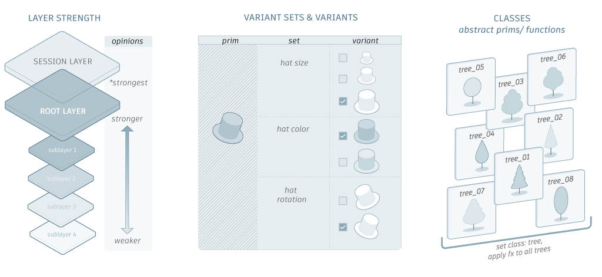

The power of USD lies in its layering system, which facilitates collaboration between different artists and studios via non-destructive editing. For example, if you start with an existing scene and create a new layer containing your edits, these edits won't affect anyone else using the same scene unless they decide to include your new layer. Together, multiple layers provide a complete view of the scene, which is known as the stage.

A basic understanding of USD will make it much easier to use and understand Maya's implementation of the USD framework. While the Maya documentation does not include a USD glossary or a complete overview of USD concepts, the following sections provide an overview workflows to showcase what you can do with USD in Maya and where to go to learn more.
For a better understanding of USD concepts, you can watch USD tutorial videos and content on the Maya Learning Channel. View the USD series for real-time explanations of concepts and theory alongside practical workflow showcases.
- [USD Import Options](topicid=GUID-65E19505-E27D-4477-BD7D-7C0F2BC0D328) and [USD Export Options](topicid=GUID-3A763D43-E626-4832-9824-57AAA9BC0A00)
- Command line support for import (`mayaUSDImport`) and export (`mayaUSDExport`) operations
- Exporting USD file types in ascii or binary format
<span style="color: purple;">**Related Concepts:**</span> See [variant](https://graphics.pixar.com/usd/docs/USD-Glossary.html#USDGlossary-Variant), [variantSet](https://graphics.pixar.com/usd/docs/USD-Glossary.html#USDGlossary-VariantSet), [instancing](https://graphics.pixar.com/usd/docs/USD-Glossary.html#USDGlossary-VariantSet), [metadata](https://graphics.pixar.com/usd/docs/USD-Glossary.html#USDGlossary-Metadata) in the Pixar USD Glossary.
- Establish parent/child relationships in the Outliner, see [Work with USD data in the Outliner](USD-in-the-Maya-Interface/USD-data-in-the-Outliner/Work-with-prims-in-the-Outliner.md
) - Create USD prims in the Outliner - Edit assets in the Outliner and Attribute Editor - Use references to define your collection of assets in the Outliner - Activate USD in the Maya Interface and work with USD data intrinsically in Maya
<span style="color: purple;">**Related Concepts:**</span> See [prim](http://graphics.pixar.com/usd/docs/USD-Glossary.html#USDGlossary-Prim), [stage](https://graphics.pixar.com/usd/docs/USD-Glossary.html#USDGlossary-Stage) in the Pixar USD Glossary.
Editing lets you perform sparse edits on top of an existing USD set. In Maya, the focus of editing with the USD Layer Editor is on managing layers, not creating layer content. For example, the USD Layer Editor provides context, like identifying the target layer, and lets you save your layers to a file on disk. For more information, see [USD Layer Editor](topicid=GUID-4FAD73CA-E775-4009-9DCB-3BC6792C465E) and [USD data in the Outliner](topicid=GUID-97358ED4-179F-4568-9382-7409E3F8E70A).
<span style="color: purple;">**Related Concepts:**</span> See [references](http://graphics.pixar.com/usd/docs/USD-Glossary.html#USDGlossary-References), [variant](http://graphics.pixar.com/usd/docs/USD-Glossary.html#USDGlossary-Variant), [kind](http://graphics.pixar.com/usd/docs/USD-Glossary.html#USDGlossary-Kind), [purpose](http://graphics.pixar.com/usd/docs/USD-Glossary.html#USDGlossary-Purpose), [layer](http://graphics.pixar.com/usd/docs/USD-Glossary.html#USDGlossary-Layer), [layerStack](http://graphics.pixar.com/usd/docs/USD-Glossary.html#USDGlossary-LayerStack) in the Pixar USD Glossary.
- [Work with USD data as Maya data](topicid=GUID-C1C08BA5-24EA-44FF-9497-71E0A6843744)
- [USD Import Options](topicid=GUID-65E19505-E27D-4477-BD7D-7C0F2BC0D328) and [USD Export Options](topicid=GUID-3A763D43-E626-4832-9824-57AAA9BC0A00)
- Command line support for import (`mayaUSDImport`) and export (`mayaUSDExport`) operations
- Exporting USD file types in ascii or binary format
<span style="color: purple;">**Related Concepts:**</span> See [variant](https://graphics.pixar.com/usd/docs/USD-Glossary.html#USDGlossary-Variant), [variantSet](https://graphics.pixar.com/usd/docs/USD-Glossary.html#USDGlossary-VariantSet), [instancing](https://graphics.pixar.com/usd/docs/USD-Glossary.html#USDGlossary-VariantSet), [metadata](https://graphics.pixar.com/usd/docs/USD-Glossary.html#USDGlossary-Metadata) in the Pixar USD Glossary.
- [Work with USD data as Maya data](topicid=GUID-C1C08BA5-24EA-44FF-9497-71E0A6843744)